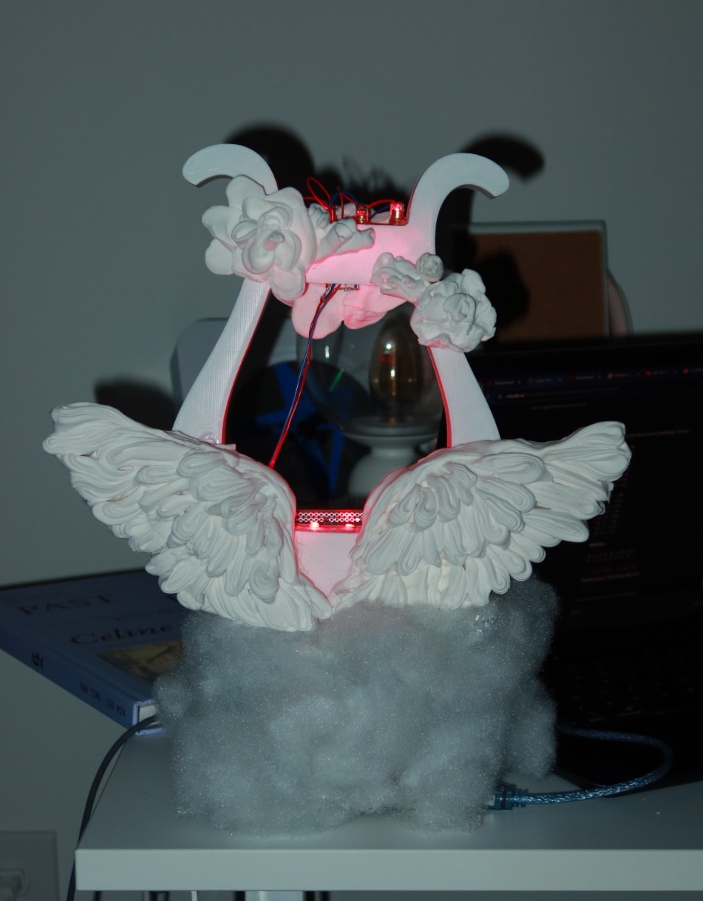
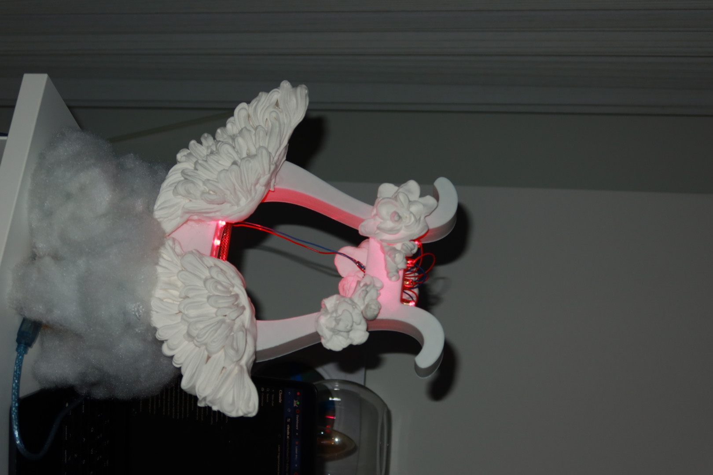
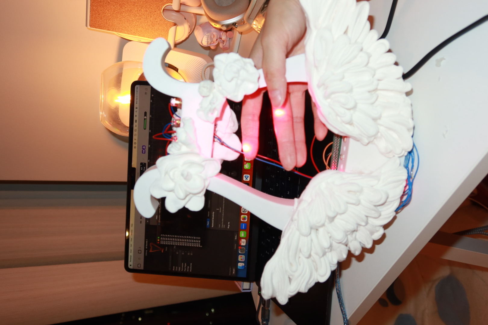
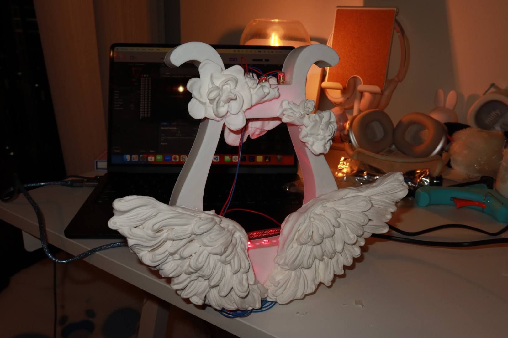
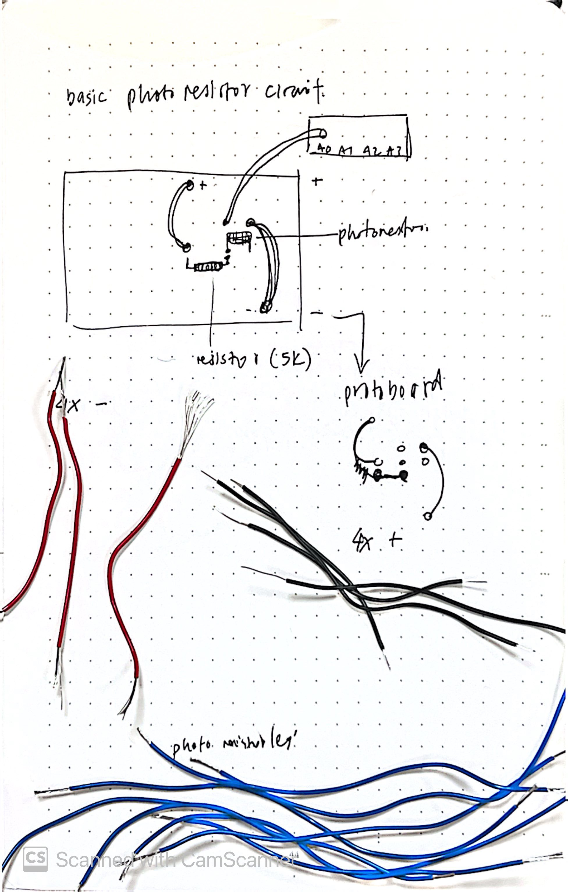

[ Build log · Spring 2026 ]
Field notes from the build.
This project is probably one of the coolest artifacts I have ever made by far. I came across the concept of a laser harp while surfing online, and, while it wasn’t the most common creation, the creator I was looking at had confirmed in the comments that she used a MIDI connection and Arduino, so I knew it could be done. I wanted to build that instrument for myself. The lack of strings seemed magical, and I could picture it as a prop in something like Harry Potter—enchanted instruments on set. A traditional harp’s asymmetry intimidated me, and I’m not a harpist (oboe and piano are more my background), so I wanted something simple and symmetrical—easier to CAD and to reason about. I landed on a lyre, inspired by the game Genshin, funny enough. Lasers as invisible strings, photoresistors catching the light, and software turning breaks in the beam into notes—that was the picture I held the whole way through.





Research & testing
The concept was simple: lasers would act as invisible strings, beaming down on photoresistors, which would read light levels. When the player blocks a beam, the value drops, and that change has to reach the music software on my computer somehow. I read a lot of threads and build logs to sanity-check the idea.
This Instructables Arduino laser harp helped me connect the dots on circuitry—my parts and schematic ended up quite different, but the underlying logic matched what I needed.
I knew the project would pull in printing, soldering, firmware, and software bridges, so I started early. Chase and Professor Nitsche helped me get lasers and photoresistors in hand; I tested them on a breadboard until the readings looked stable. Once those behaved, I let myself believe the rest of the build was actually possible.
3D modeling
I started CAD knowing the print queue would eat time. There are plenty of Venti-style lyre meshes online, but editing someone else’s body was fighting the tool more than designing—so I modeled my own shell in Fusion, with room to hide the Arduino (or try to), routes for wiring, and clean holes for lasers and sensors. I had never really used Fusion before; splines, extrudes, and reference images turned into a crash course from a patient friend (thanks, Tanmay). We iterated on proportions, exported an STL, and sent it to another friend with a printer when the campus HIVE line looked endless.
Our first version had a base about fourteen inches tall and an inch and a half thick—too big for the printer we had access to, and it had to get thinner anyway. Fitting the protoboard and Arduino entirely inside started to feel like a pipe dream; I accepted a more external harness and moved on.
After another pass, the final dimensions settled to:
- Top holes (6mm lasers): 6.3mm for tolerance
- Bottom holes (so lasers don’t fall through): 4.7mm
- Height of lyre: 10 inches
- Bottom holes for photoresistors: about 5mm
The bottom of the lyre stayed hollow to feed photoresistor wiring up cleanly. When the mesh finally felt right, I sent it off to print—about eight hours on the clock, and a long wait to see if reality matched the screen.
MIDI bridge & code
This layer took almost a full day of head-scratching. I went looking for Hairless MIDI Bridge to pipe the Arduino into GarageBand and learned the build everyone recommended doesn’t play nicely with newer Mac OS. I needed another path.
What actually happened
- Serial-MIDI Bridge first. I installed SerialMidiBridge, worked through the Mac security warning, pointed it at
/dev/cu.usbmodem101, baud 9600, IAC Driver Bus 1, hit Start—and GarageBand stayed silent. - Checking the obvious. IAC was online in Audio MIDI Setup, Bus 1 existed, GarageBand reported a MIDI input, MIDI Monitor showed the bus alive. Blocking a laser still produced nothing in the DAW.
- Serial told the truth. With Serial Monitor open I could see the Arduino shouting values when I broke beams, but MIDI Monitor never saw translated notes. The bridge wasn’t turning my stream into reliable MIDI.
- Dead ends. Hairless’s site was down when I looked. MIDIUSB wasn’t an option on my Uno. Cranking Serial-MIDI Bridge toward true MIDI baud didn’t save it.
- Python. I set a threshold at 600—beam blocked sends NOTE ON, clear sends NOTE OFF—installed pyserial and python-rtmidi, and wrote a small script to read the comma-separated analog values as text and emit MIDI straight to the IAC driver. First pass tried to treat raw bytes as MIDI and sounded like chaos; parsing integers fixed it. After that, GarageBand finally listened.
To run it: python3 ~/serial_midi.py. The script auto-reconnects when the cable gets fussy. You have to close the Arduino IDE before Python owns the serial port—and the other way around—or they step on each other. The listings below are for four lasers and four photoresistors.
Python bridge
import serial
import rtmidi
import time
midiout = rtmidi.MidiOut()
midiout.open_port(0)
THRESHOLD = 600
last_notes = []
def connect():
while True:
try:
ser = serial.Serial('/dev/cu.usbmodem101', 9600, timeout=1)
time.sleep(2)
ser.reset_input_buffer()
print("Connected!")
return ser
except:
print("Waiting for Arduino...")
time.sleep(2)
ser = connect()
print("Running... block the lasers!")
while True:
try:
line = ser.readline().decode('utf-8').strip()
if line:
values = list(map(int, line.split(',')))
if len(values) != 4:
continue
b1 = values[0] < THRESHOLD
b2 = values[1] < THRESHOLD
b3 = values[2] < THRESHOLD
b4 = values[3] < THRESHOLD
if b1 and b2 and b3 and b4:
notes = [83]
elif b1 and b2 and b3:
notes = [77]
elif b1 and b2 and b4:
notes = [73]
elif b1 and b3 and b4:
notes = [75]
elif b2 and b3 and b4:
notes = [80]
elif b1 and b2:
notes = [72]
elif b1 and b3:
notes = [74]
elif b2 and b3:
notes = [69]
elif b3 and b4:
notes = [70]
elif b2 and b4:
notes = [80]
elif b1 and b4:
notes = [73]
elif b1:
notes = [71]
elif b2:
notes = [76]
elif b3:
notes = [79]
elif b4:
notes = [78]
else:
notes = []
for note in last_notes:
if note not in notes:
midiout.send_message([0x80, note, 0])
for note in notes:
if note not in last_notes:
midiout.send_message([0x90, note, 127])
print("NOTE ON:", note)
last_notes = notes
except:
print("Disconnected! Reconnecting...")
time.sleep(1)
ser = connect()Arduino · four LDRs, 9600 baud
void setup() {
Serial.begin(9600);
}
void loop() {
int ldr1 = analogRead(A0);
int ldr2 = analogRead(A1);
int ldr3 = analogRead(A2);
int ldr4 = analogRead(A3);
Serial.print(ldr1); Serial.print(",");
Serial.print(ldr2); Serial.print(",");
Serial.print(ldr3); Serial.print(",");
Serial.println(ldr4);
delay(50);
}Circuits & soldering
With the shell in hand, I wired the “strings”: photoresistors into dividers on A0–A3, lasers sharing positive and negative busses, grounds and 5V where they belonged. I’m not brand-new to soldering, so I pre-cut and stripped wire, dry-fit everything, and only then started locking joints down.
Don’t do what I did once: soldering photoresistor legs before threading them through the body means extra jumpers and extra time. Thread first, solder second.
The laser harness was fussier than it should have been—bussing four emitters to two rails meant solder, desolder, shorten, lengthen, repeat until the bundle cooperated. I’d meant to tuck the wiring along the lyre’s edges; the final length is a little proud instead.
When all four beams lined up with their sensors, the project finally felt like it had a finish line. Hot glue keeps the lasers from drifting off their photoresistors, and it also saved a few parts that popped loose when I handled the board too roughly—a lesson I wish I’d already internalized on the cat project.
Decorating
I still wanted the object to feel like an instrument on a shelf, not a bare dev board with lasers. Air-dry clay entered the picture after a guest lecture in another class—an exercise about emotional expression where Supratim handed out clay; I ended up sculpting a small bird for it and realized the material could hide hardware and add wings.
I ordered more clay, shaped wings and small embellishments, and built the stand from cardboard plus leftover stuffing from an earlier project. The base reads a little like a cloud holding the lyre up—which was exactly the mood I was chasing.
Final demo
Full demo
Shorts
Reflection
This build reminded me how much faster you move when people who’ve already fought the same battles lean in. ECE students at the HIVE kept stopping to ask what I was making and offering tricks for cleaner joints or saner routing—that community piece mattered as much as any datasheet.
I’m far more comfortable at the soldering iron now, and Fusion feels like a tool I’ll open again instead of dreading. There’s still more to learn (there always is), but the lyre actually plays—and that’s the line I wanted to end on.